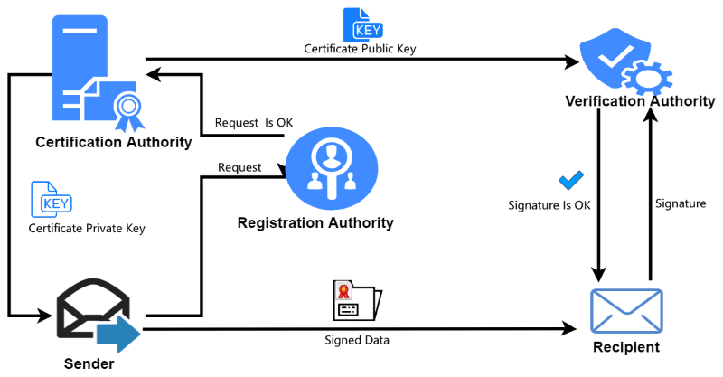

版本号
序列号
用户公钥、身份信息
有效期
CA 签名
存放已签发证书：审计（Audit）、吊销管理（生成 CRL / 响应 OCSP）、重新签发或续订、合规性（如 WebTrust、ETSI 标准要求）
证书吊销列表 CRL - Certificate Revocation List

这个挑战是随机、一次性、不可预测的，防止重放攻击
如果签名有效 → 证明你确实持有对应的私钥 → 身份合法 → 允许访问
如果无效 → 拒绝访问
Certificates are used in digital communication for authentication, encryption, and as a signature. They consist of various pieces of information, including:
the certificate’s expiration date
the digital signature of the issuing certification authority, and
the public key of the certificate holder.